SAN FRANCISCO: SPOTS TO STOP
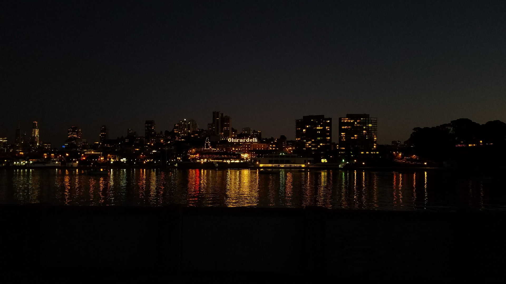
Welcome!
Welcome to a guide of San Francisco's best Spots to Stop! Here you will find some great places to visit in the beautiful city of San Francisco. It is oen of the most diverse places in the world, and one of the most expensive cities. There is no limit as to what you can do in this city. Whether you want to take a nature walk, explore the zoo, or go shopping down town. Take a look at this website and begin your adventure! Click the orange likes to navigate the page.
Stow Lake
Located in Golden Gate Park, Stow Lake is a beautiful oasis hidden away in the city. It is a man made lake surrounding a mini island. You can go to the boat house and rent pedal boats or row boats for up to four people. It is the perfect date destination for you and your significant other, or a great way to spend time with friends. While pedaling or rowing your boat you will go under the Stone Bridge, go past the Huntington Waterfall, the Chinese Pagoda, and even pay a visit to a small family of red eared slider turtles. The water is alway smooth which makes for a lovely romantic ride around the lake.
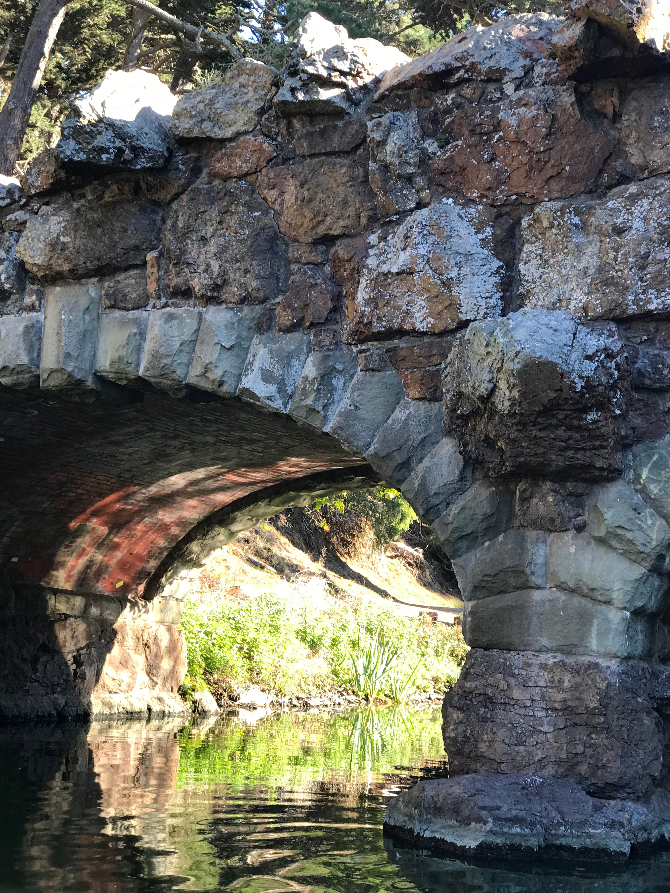
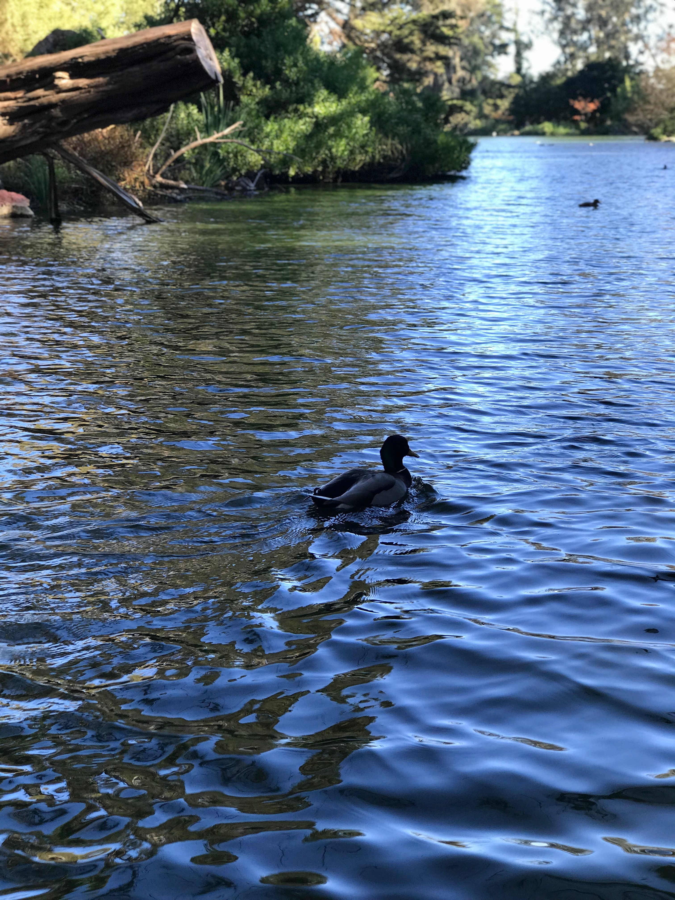
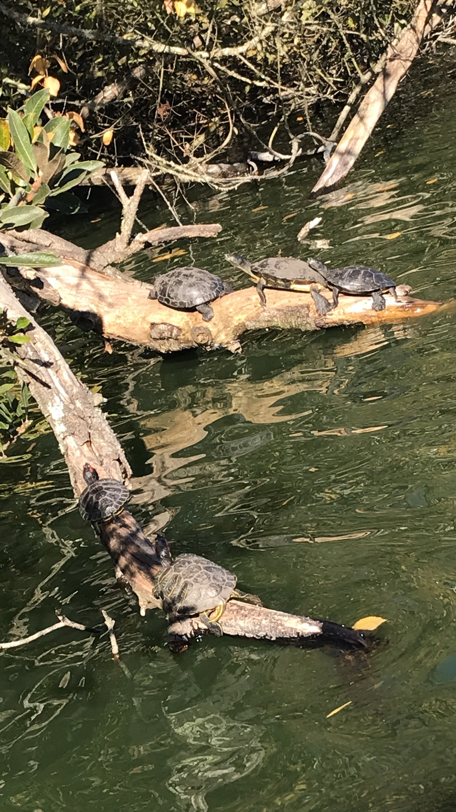
San Francisco Zoo
The San Francisco Zoo is one of the most beautiful sights to see in San Francisco. It is steps away from Ocean Beach and is home to over 2,000 beautiful animals. The grounds span across 100 acres and has been open since 1929. It is a place where people of all ages can go and enjoy themselves. I have visited it ever since I was five years old. The zoo itself is very nature focused. It is divided into different sections based on different parts of the world. The environment makes the animals feel at home and the visitors feel like they are in another world. Besides being able to come face to face with these beautiful creatures, you can also visit the Aviary and take a ride on the Little Puffer Miniature Steam Train.
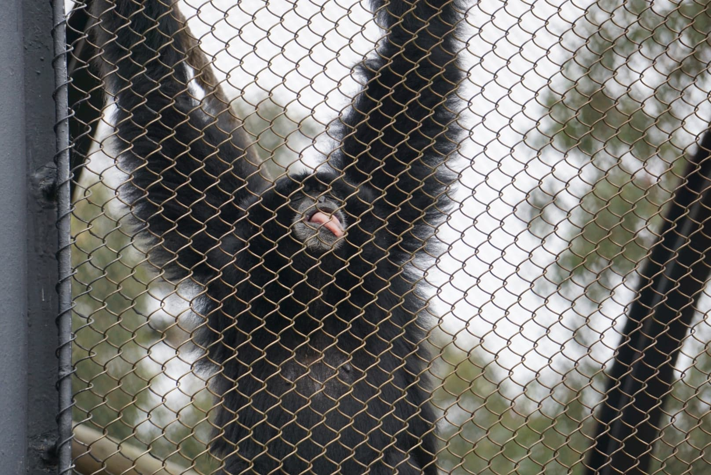
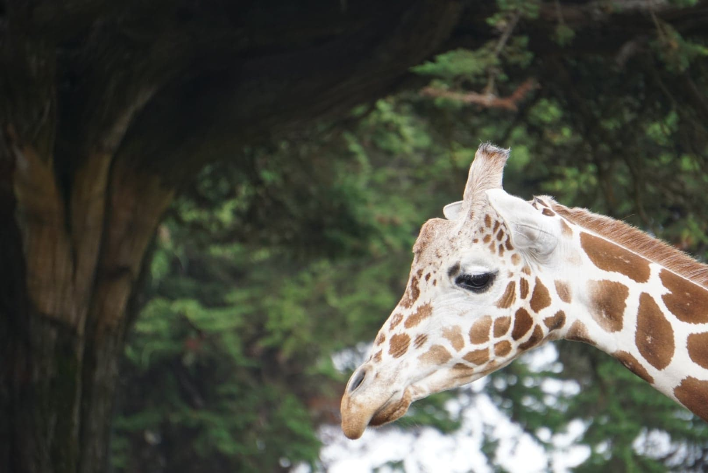
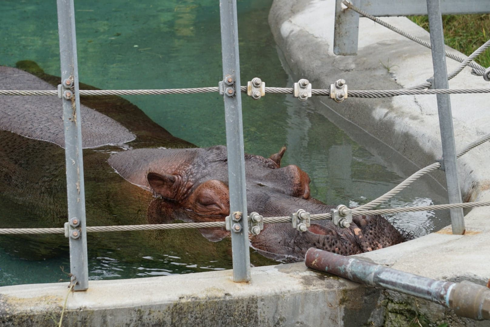
Lover's Lane
Take a walk down Lover's Lane to escape all the hustle and bustle of the city! Located in the Presidio, Lover's Lane is a beautiful trail surrounded by luscious trees. Once you are there, you can feel the essence of nature all around you. You can take a peaceful walk down this shaded trail, and feel like you are in a whole new world. It is a popular place amongst walkers, joggers, and bikers. It's only a short drive away from the Financial District. Lover's Lane is a great place to unwind and have some alone time, or for a romantic walk with the one you love. While walking down the trail, you will come across the Presidio Officers’ Club for a bite to eat. Lover's Lane is one of the most beautiful places in the city.
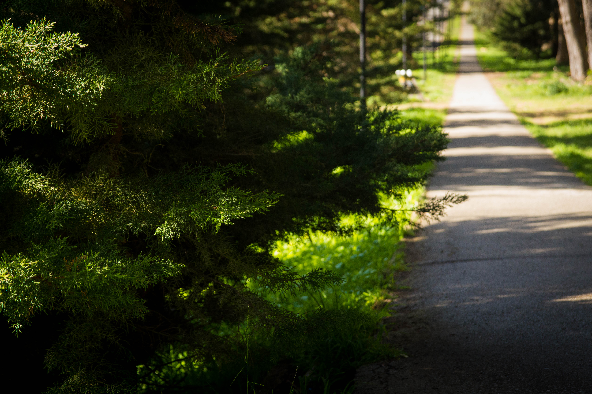

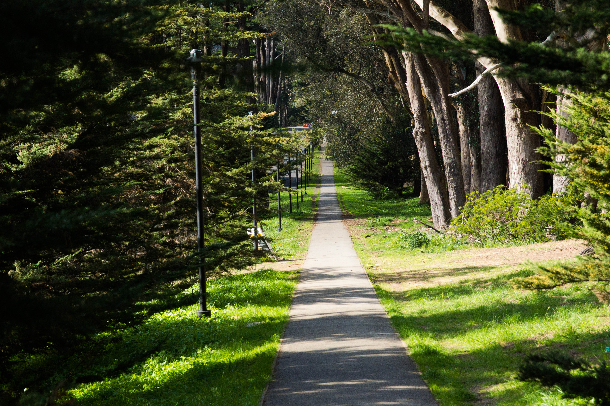
Ocean Beach
While visiting the San Francisco Zoo, you should definitely take a detour to Ocean Beach. Imagine a 3.5 mile stretch of beautiful white sand, and view of the Golden Gate Bridge. While taking a stroll down the beach you might also be lucky and find a sand dollar! Due to its location, Ocean Beach is not a beach for swimming, but some surfers do tuff it out. You will be in for a windy walk, but the sunset is spectacular. One of the perks about Ocean Beach is that it is not as crowded as the other beaches in the area. It's the perfect place for a romantic picnic for two, or a photoshoot by the water.
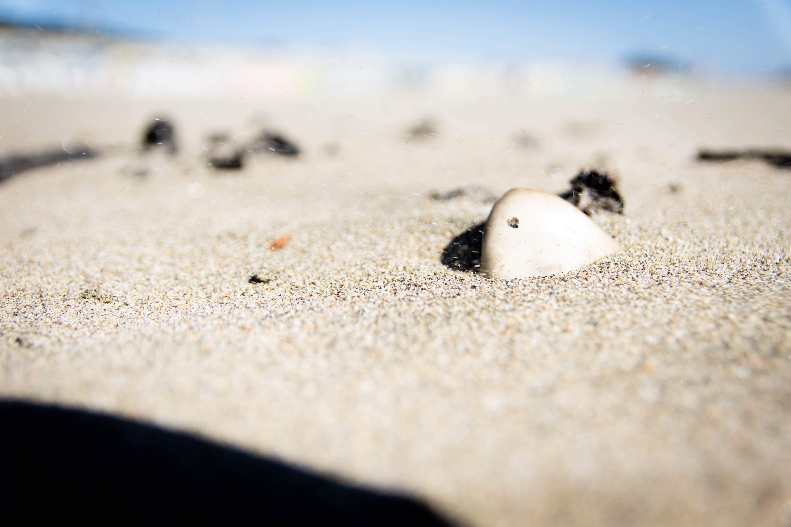
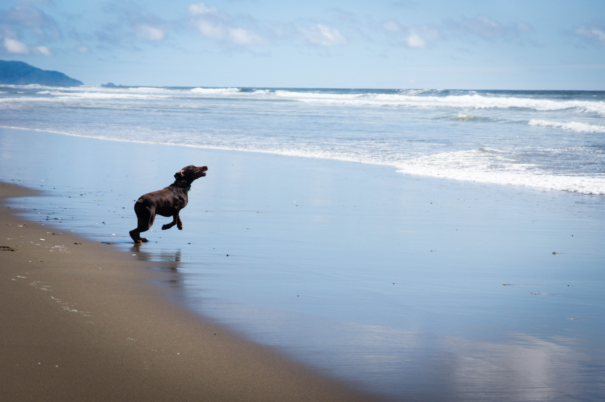
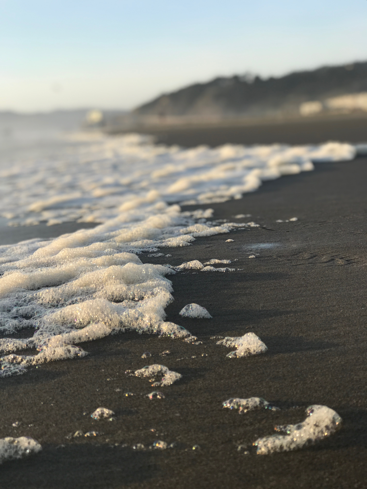
Pier 39
Pier 39 is one of San Francisco's top tourist destinations. It is home to the sea lions, Trish's Mini Donuts, Boudin, Ghirardelli, Aquarium of the Bay, Musée Mécanique, live magic and more. If is a great place to take the family. You can walk around and eat all sorts of goodies, check out some funky shops like the Candy Baron, Houdini's Magic Shop, Lefty's, or the San Francisco Sock Market. From the pier you can walk down Jefferson Street to Boudin and end up at Ghirardelli Square. There, you can have some tasty chocolate desserts, or have a lovely dinner at Pallete Tea House. You can never run out of things to do at Pier 39!
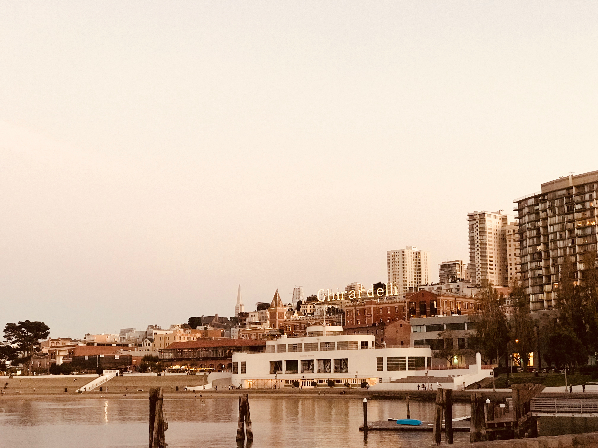
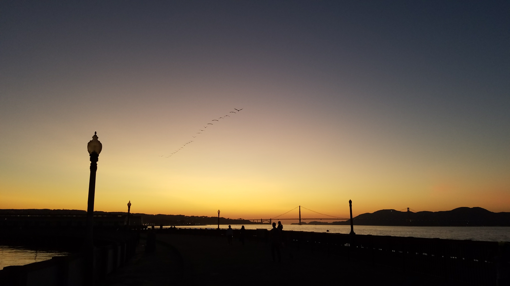
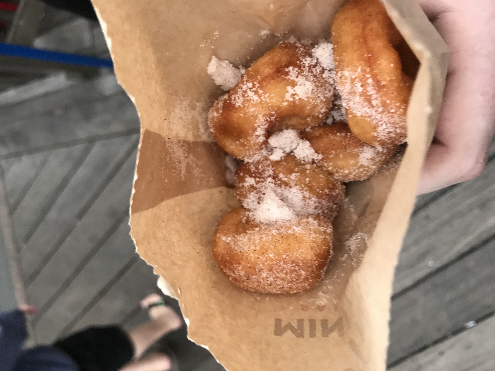
BACK TO THE TOP